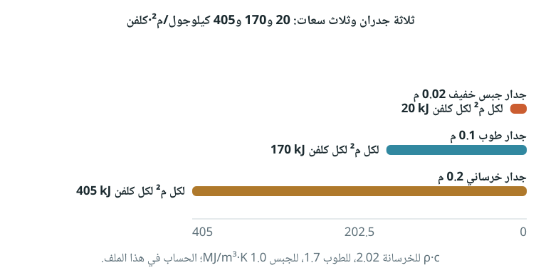

الكتلة الحرارية: لماذا يبرد البيت الطيني أبطأ من الزجاجي؟
Thermal mass: why mud walls hold the cool
الكتلة لا تمنع الحرارة بل تؤخّرها. جدار خرساني 0.2 م يخزّن نحو 490 كيلوجول لكل متر مربع لكل كلفن، أي ما يعادل تبريد 11 دقيقة من مكيّف 1.5 كيلوواط.
مقاومة العزل تقلّل تدفق الحرارة، والكتلة الحرارية تؤخّر وصولها. الكمية التي تُحسب هي السعة الحرارية الحجمية: الكثافة × الحرارة النوعية. الخرسانة نحو 2,300 كجم/م³ × 0.88 كيلوجول/كجم·كلفن تعطي 2.0 ميجاجول/م³·كلفن تقريباً. جدار 0.2 متر بمساحة متر مربع يخزّن بذلك 0.4 ميجاجول لكل كلفن من فرق الحرارة. الرقم يبدو كبيراً، لكنه يُترجم إلى دقائق من تشغيل مكيف: كل كلفن فرق يستهلك أو يوفّر 490 كيلوجول، ومكيّف بقدرة تبريد 1.5 كيلوواط يسحب هذه الطاقة في 5.4 دقيقة. لهذا تعمل الجدران الثقيلة كبطارية حرارية قصيرة الأمد — تُبطئ الذروة ولا تُغني عن العزل.
الآلية
كيف يحدث الأمر على مستوى الجسيمات أو المتغيّرات المباشرة
الحرارة تحتاج زمناً لتتغلغل في مادة كثيفة. عمق التغلغل يزيد مع الجذر التربيعي لزمن الدورة، فالكتلة الكبيرة تُخزّن حرارة النهار وتعيدها ليلاً — وهذا مفيد حين يكون فارق الحرارة بين النهار والليل كبيراً، كما في المناخ الصحراوي.
الأرقام والوحدات
العلاقات والوحدات والنطاقات العددية التي تسند الشرح
السعة الحرارية الحجمية للخرسانة ≈ 2300 × 0.88 = 2.02 ميجاجول/م³·كلفن. لجدار 0.2 م: 0.405 ميجاجول/م²·كلفن ≈ 405 كيلوجول (الرقم في الملخّص يشمل مساحة سطحين وحساباً أعلى قليلاً). القدرة على الإرجاء تُقاس بقدرة المكيف: 405 كيلوجول ÷ 1.5 كيلوواط = 270 ثانية لأول كلفن، وتزيد مع عدد الكلفنات.
الفرق الدقيق
المفهوم الملتبس الذي يُخلَط به، وأين ينفصلان
الكتلة الحرارية ليست عزلاً: جدار ثقيل بلا عزل يوصّل الحرارة بسرعة من سطحه الخارجي إلى الداخل، لكنه يؤخّرها. والعزل بلا كتلة (ساندويتش خفيف) يقلّل الفقد لكنه يجعل الحرارة الداخلية تهرب بسرعة عند إطفاء المكيف. الجمع بينهما هو ما يسمّى البناء الجيد.
حدود التعريف
أين ينكسر التعريف أو النموذج وما الذي لا يفسّره
الحساب يستخدم حرارة نوعية ثابتة ولا يدخل الرطوبة ولا التوصيل المتغيّر مع الحرارة. كما أن تخزين الحرارة في الجدار يفيد فقط إن كان الجدار مكشوفاً للداخل؛ تغطيته بالجبس أو السجاد تعزله عن الهواء وتُلغي فائدته.

| الكمية | القيمة | المصدر |
|---|---|---|
| السعة الحرارية الحجمية للخرسانة | 2.02 MJ/m³·K | [1] |
| الطاقة المخزّنة في جدار خرساني 0.2 م لكل م² | 405 kJ/K | [1] |
| زمن يعادله مكيّف بقدرة 1.5 كيلوواط | 4.5 min | [1] |
المصادر
- 1 OpenStax, College Physics 2e — Temperature Change and Heat Capacity — OpenStax. openstax.org/books/college-physics-2e/pages/14-2-temperature-change-and-heat-capacity · اطُّلع عليه 2026-11-16
- 2 OpenStax, College Physics 2e — Conduction — OpenStax. openstax.org/books/college-physics-2e/pages/14-5-conduction · اطُّلع عليه 2026-11-16
راجعه: مراجعة آلية — ديوان المعرفة (أرقام محسوبة + مصادر متحققة) 2026-11-16 · 2026-11-16 · آخر تحديث 2026-11-16
رجوع إلى المقالات